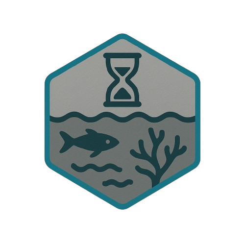

SCHMIDT OCEAN INSTITUTE VIDEO ARCHIVER
SOIVA
SOIVA (Schmidt Ocean Institute Video Archiver) performs bulk ingestion, cut-point detection, and tagging of marine expedition footage using computer vision and metadata extraction pipelines.
Records0
StorageLOCAL SESSION
HashSHA-256
Native CVOPEN CV/TENSORFLOW
| Name | Bytes | Duration | Dimensions | SHA-256 |
|---|
Candidate cuts0
Browser cut detection uses coarse sampled luminance deltas. Native SOIVA's OpenCV pipeline is the full implementation.